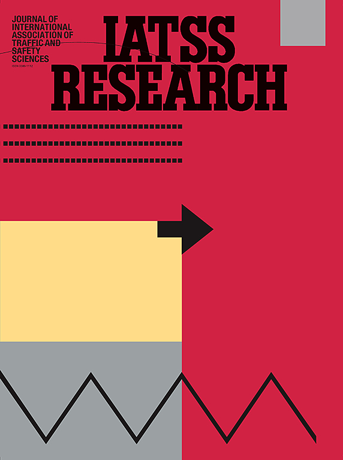
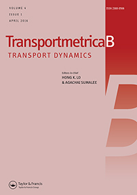
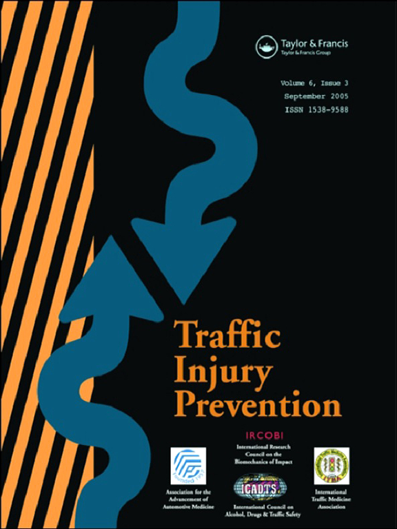
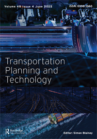

Mohamed Hasain N, Ph.D.
Interdisciplinary Transport Researcher
Home
Research & Publications
Education & Experience
Contact
Research Impact
7
Peer Reviewed Journal Publications
Scopus
27
Total Citations
Google Scholar
3
h-index
Google Scholar
1
i10-index
Google Scholar
Journals Preview

IATSS Research

Transportmetrica B: Transport Dynamics

Traffic Injury Prevention

Transportation Planning and Technology
IATSS Research
Transportmetrica B: Transport Dynamics
Traffic Injury Prevention
Transportation Planning and Technology
Journal Articles
Hasain, N. M.
& Ahmed, M. A. (2025)
Traffic safety evaluation using surrogate safety measures in the context of Indian mixed traffic: A critical review
IATSS Research
, 49(2), 201-219
DOI: 10.1016/j.iatssr.2025.04.004
Maddu, K., Jena, S., &
Hasain, N. M.
(2025)
Dedicated bus lane vs queue jump lane: a microsimulation case study of Guwahati city using VISSIM under mixed traffic conditions
Transportation Planning and Technology
, 1–28
DOI: 10.1080/03081060.2025.2487864
Hasain, N. M.
& Ahmed, M. A. (2024)
Identification of critical conflicts and its implementation in microsimulation for effective safety assessment in unsignalized intersections
Transportmetrica B: Transport Dynamics
, 12(1), 2350520
DOI: 10.1080/21680566.2024.2350520
Hasain, N. M.
& Ahmed, M. A. (2024)
Assessing the impact of reaction time on the crossing and merging conflicts and identifying suitable reaction time to detect the critical conflict
Transportation Planning and Technology
, 47(7), 1156–1178
DOI: 10.1080/03081060.2024.2341313
Hasain, N. M.
& Ahmed, M. A. (2023)
Proposing an effective approach for traffic safety assessment on heterogeneous traffic conditions using surrogate safety measures and speed of the involved vehicles
Traffic Injury Prevention
, 25(2), 1–9
DOI: 10.1080/15389588.2023.2289343
Hasain, N. M.
, Ahmed, M. A., Jena, S., & Khan, H. R. (2023)
Comparison of different calibration methods in modelling the unsignalized intersection using VISSIM with vehicular flow as the fitness measure
Advances in Transportation Studies
, 60, 17–32
Hasain, N. M.
& Ahmed, M. A. (2022)
Safety evaluation of unsignalized intersection with heterogeneous traffic using Post Encroachment Time and conflicting vehicle speed
European Transport / Trasporti Europei
, 88, 1–14
DOI: 10.48295/ET.2022.88.3
Book Chapters & Proceedings
Hasain, N. M.
, Ahmed, M. A., & Reddy, B. V. (2025)
Modelling and calibration of a mixed traffic road section in VISSIM with multiple measure of effectiveness through genetic algorithm
Lecture Notes in Civil Engineering
, 426, 83–100
DOI: 10.1007/978-981-96-1037-2_6
Hasain, N. M.
& Ahmed, M. A. (2021)
Safety enhancement of unsignalized intersection using microsimulation and surrogate safety measures
IOP Conference Series: Earth and Environmental Science
, 796(1), 012016
DOI: 10.1088/1755-1315/796/1/012016
Conference Presentations
Hasain, N. M.
, Ahmed, M. A., & Reddy, B. V. (2023)
Modelling and calibration of a mixed traffic road section in VISSIM with multiple measure of effectiveness through genetic algorithm
7th Conference of Transport Research Group (CTRG)
December 17–20, 2023, SVNIT Surat, Gujarat
Hasain, N. M.
& Ahmed, M. A. (2021)
Safety enhancement of unsignalized intersection using microsimulation and surrogate safety measures
Community Based Research and Innovations in Civil Engineering (CBRICE)
March 18–19, 2021, Manipal University, Jaipur, Rajasthan
Hasain, N. M.
& Ahmed, M. A. (2020)
Proactive evaluation of traffic safety in unsignalized intersection using surrogate safety measures
13th TPMDC – Transportation Planning and Implementation Methodologies for Developing Countries
December 10–11, 2020, IIT Bombay, Mumbai